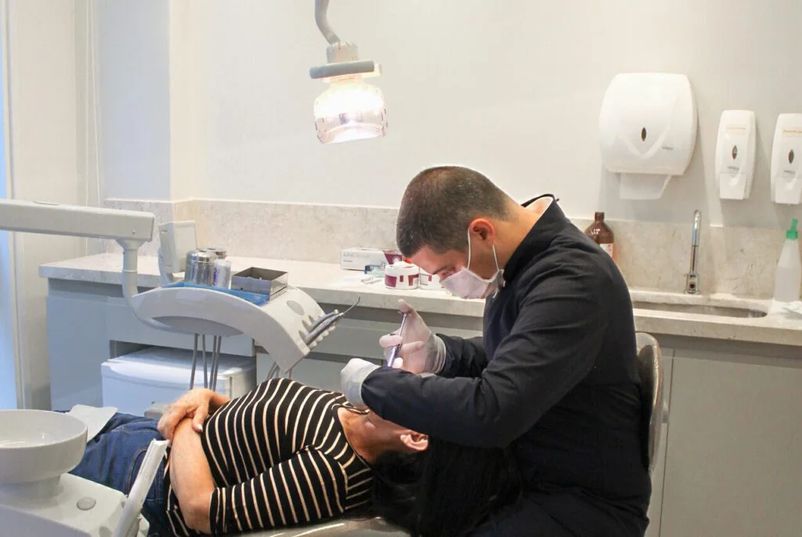
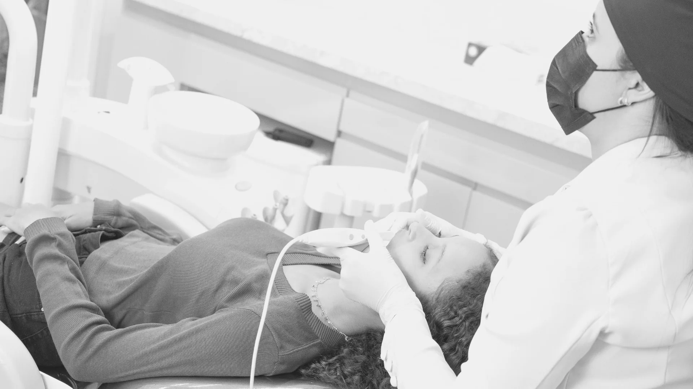

01Imagem ilustrativa
01Imagem ilustrativaReabilitação oral
Implante dentário
Repõe a raiz de um dente perdido e sustenta a prótese que devolve forma e função ao sorriso.
Entenda o tratamento
Implantes dentários, estética bucal e outras áreas da odontologia em uma clínica multidisciplinar na Asa Sul.
Implantes com possibilidade de sedação consciente186 avaliações no Google
Conheça os relatos DESCUBRA A MAISON ↓MAISON ODONTOLOGIA · FOTO DA CLÍNICAAtendimento pelos planos Life Empresarial Saúde, MetLife, INPAO Dental, Rede Odonto Empresas e Amil.
Consultar meu plano


Implantes, estética e outras áreas da odontologia reunidas em uma clínica multidisciplinar na Asa Sul.
01Imagem ilustrativaRepõe a raiz de um dente perdido e sustenta a prótese que devolve forma e função ao sorriso.
Entenda o tratamento 02Imagem ilustrativa
02Imagem ilustrativaSoluções fixas ou removíveis para repor dentes e ajudar na mastigação, na fala e na estética.
Entenda o tratamento 03Imagem ilustrativa
03Imagem ilustrativaAlinhadores transparentes e removíveis que movimentam os dentes com acompanhamento ortodôntico.
Entenda o tratamento 04Imagem ilustrativa
04Imagem ilustrativaLâminas finas sobre a frente dos dentes para planejar mudanças de cor, forma e proporção.
Entenda o tratamento 05Imagem ilustrativa
05Imagem ilustrativaProcedimentos como extrações, com avaliação, planejamento e orientações para a recuperação.
Entenda o tratamento 06Imagem ilustrativa
06Imagem ilustrativaTratamento para clarear dentes naturais, no consultório ou em casa com supervisão profissional.
Entenda o tratamento 07Imagem ilustrativa
07Imagem ilustrativaPlanejamento estético das proporções do rosto, com técnicas escolhidas para os seus objetivos.
Entenda o tratamento
A Maison abriu as portas em dezembro de 2021, na Asa Sul. Reunimos diferentes áreas da odontologia, com foco em implantes dentários e estética bucal.
Planejamos cada tratamento de acordo com as necessidades do paciente. Cuidado individualizado, conversa e transparência fazem parte de cada etapa.
A nossa forma de atender começa no respeito e se constrói em cada relação.
Cuidado odontológico com excelência, atenção individual, conforto e confiança em todas as etapas.
Ser referência pela qualidade dos tratamentos e pelo uso de técnicas atualizadas para cuidar da saúde bucal.
Acolhimento desde a recepção e confiança já na primeira visita.
Destaca o acolhimento, a limpeza e a organização da clínica.
Valoriza a experiência do atendimento ao pós-operatório.
Elogia o atendimento e a qualidade dos profissionais.
Relata uma experiência muito positiva com a clínica.
Destaca o atendimento diferenciado e o ambiente acolhedor.
Elogia a estrutura, a limpeza e o atendimento dos profissionais.
Conta que a equipe ajudou a tornar a consulta mais tranquila.
Destaca a disponibilidade da equipe e a confiança no atendimento.
Relata boas experiências recorrentes com a clínica.
Valoriza a tranquilidade do ambiente e a confiança desde a recepção.
Destaca a boa recepção de toda a equipe desde o primeiro atendimento.
Avaliações públicas do Google, apresentadas em resumo. Consulte os relatos completos para conhecer cada experiência.
Um olhar para o consultório e para as diferentes possibilidades de cuidado odontológico.


Na Asa Sul, em um centro clínico preparado para receber você.
SGAS 915, lote 69/70
Sala 41 · 2º subsolo
Brasília – DF · CEP 70390-150
Agende sua consulta na Asa Sul. A equipe da Maison está pronta para receber você.
O cuidado está em cada detalhe.